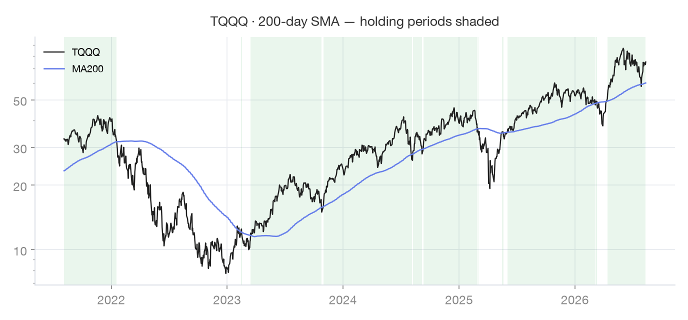
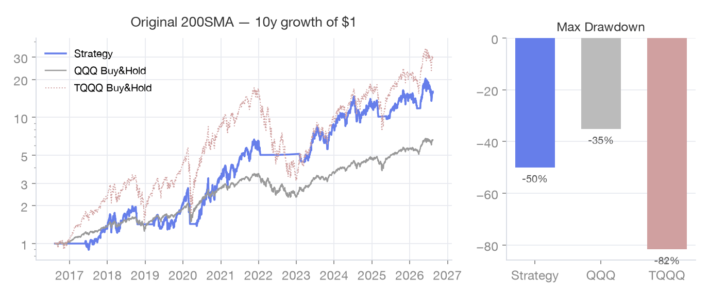

TQQQ 200일 이동평균선 하나로 시장 상황을 판단하고, 상황별로 정해진 자산배분을 실행하는 투자 전략입니다. 예측하지 않습니다 — 규칙을 따를 뿐입니다.
기준은 단 하나, TQQQ(나스닥 3배 레버리지 ETF)의 200일 이동평균선입니다. 종가가 이 선의 어디에 있는지에 따라 시장을 세 가지 상황으로 나누고, 각 상황마다 해야 할 일이 미리 정해져 있습니다. 판단할 것이 없으니 감정이 끼어들 틈도 없습니다.
모든 성장 자산(TQQQ, SPYM)을 전량 매도하고 100% SGOV(단기 국채 ETF)로 전환합니다. 레버리지에서 완전히 내려와 다음 신호를 기다립니다.
안전 자산(SGOV)을 전량 TQQQ로 교체하고, 신규 자금도 TQQQ를 매수합니다. 단, 과열 구간에서 사둔 SPYM이 있다면 그대로 보유합니다. 전략 수익의 대부분이 만들어지는 핵심 구간입니다.
기존 TQQQ는 그대로 보유하되, 월급 등 새로 생긴 돈은 SPYM을 매수해 리스크를 관리합니다. 단기 과열 신호일 수 있으므로 추격 매수 대신 안정적인 자산을 쌓습니다.
집중 투자 구간이 오면 "SPYM까지 다 팔아 TQQQ에 올인하면 더 좋지 않을까?"라는 유혹이 생깁니다. 하지만 장기적으로는 오히려 수익률을 갉아먹는 선택이 될 수 있습니다.
최근 10년 데이터로 이 전략의 규칙을 그대로 재현한 차트입니다. 초록 음영이 TQQQ 보유 구간 — 2022년 약세장에서 옆으로 걷다가 2023년 골든크로스에 재진입하는 모습이 이 전략의 핵심 장면입니다.

